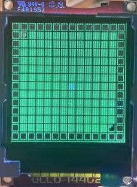
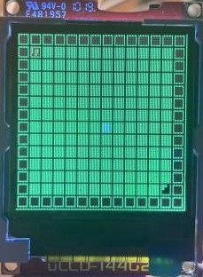

For the final project, we designed and built a rhythm-based movement evasion game, inspired by the indie dungeoner Crypt of the Necrodancer. We incorporated some key features of Crypt of the Necrodancer into our mbed version. For instance, music plays throughout the game. The player character can move once per beat, which follows the music and is also indicated by a flashing LED on the mbed. Enemies, scattered randomly throughout the floor, can kill the player and end the game if moved into. After reaching the staircase on the first floor and evading the boss on the second, the game ends.
Mbed Crypt displays on a uLCD Board and takes player input from a Bluetooth module connected to a smartphone. It also includes a two-player mode, where a second player traverses the map alongside the first and uses the other four buttons in the Bluefruit input on the smartphone to move. Screen captures of the two levels are shown below (the player character is the red music note). A demo can be watched above.
 

The mbed interfaces with a uLCD display an Adafruit Bluetooth UART Friend, and a Class D Audio Amp connected to a speaker.

void clk() {
// Game code waits for input on a timer
beat = 1;
// Have clock increment a counter from 0 upZ to 100 (wait time depends on song [level])
for(;;) {
Thread::wait(levelTimes());
counter++;
if (counter > 100) {
counter = 1;
}
//reset ability to make action on half beat
if (counter == 50) {
processEnemyAction();
actLock = 1;
actLock2 = 1;
}
//indicate when a press is on beat. May need to alter according to calibration
if (counter == 25 || counter == 75) {
beat = !beat;
}
}
}
...
void actionable(int i) {
if (actLock) {
actM.lock();
actLock = 0;
actM.unlock();
if (counter <= 25 || counter >= 75) {
currAction = i;
} else {
currAction = 0;
}
processAction();
}
}
float note[64]= {293.66, 440.00, 329.66, 440.00, 349.23, 440.00, 392.00, 440.00,
349.23, 440.00, 329.66, 440.00, 293.66, 440.00, 277.18, 440.00,
293.66, 440.00, 329.66, 440.00, 349.23, 440.00, 392.00, 440.00,
349.23, 440.00, 329.66, 440.00, 293.66, 440.00, 277.18, 440.00,
233.08, 440.00, 261.63, 440.00, 293.66, 440.00, 329.66, 440.00,
349.23, 440.00, 329.66, 440.00, 293.66, 440.00, 261.63, 440.00,
261.63, 440.00, 293.66, 440.00, 329.66, 440.00, 349.23, 440.00,
392.00, 440.00, 349.23, 440.00, 329.66, 440.00, 293.66, 440.00
};
void speaker_thread()
{
while(1){
for(int i = 0; i < 64; i++) {
speaker.period(1.0/note[i]);
speaker = 0.3;
Thread::wait(1000);
}}
}
The game board is another important piece of the puzzle that manages all of the in-game interactions. This variable is referenced by almost every function within the code and, as such, is carefully managed with mutexes and specialized functions. Two of those functions, which manage the screen updates on each beat and action, are shown below.
void drawSquare(int i, int j, int temp) {
if (temp == 0) { // empty
if (level == 1) {
uLCD.filled_rectangle(i * 9 + 1, j * 9 + 1, i * 9 + 8, j * 9 + 8, YELLOW);
} else if (level == 2) {
uLCD.filled_rectangle(i * 9 + 1, j * 9 + 1, i * 9 + 8, j * 9 + 8, 0x00FF00);
}
} else if (temp == pl1) { // player
uLCD.filled_rectangle(i*9+2,j*9+6,i*9+3,j*9+7,RED);
uLCD.filled_rectangle(i*9+6,j*9+6,i*9+7,j*9+7,RED);
uLCD.line(i*9+3,j*9+5,i*9+3,j*9+2,RED);
uLCD.line(i*9+7,j*9+5,i*9+7,j*9+2,RED);
uLCD.line(i*9+3,j*9+2,i*9+8,j*9+2,RED);
} else if (temp == pl2) { // player
uLCD.filled_rectangle(i*9+2,j*9+6,i*9+3,j*9+7,BLUE);
uLCD.filled_rectangle(i*9+6,j*9+6,i*9+7,j*9+7,BLUE);
uLCD.line(i*9+3,j*9+5,i*9+3,j*9+2,BLUE);
uLCD.line(i*9+7,j*9+5,i*9+7,j*9+2,BLUE);
uLCD.line(i*9+3,j*9+2,i*9+8,j*9+2,BLUE);
} else if (temp == w) {
uLCD.filled_rectangle(i * 9 + 2, j * 9 + 2, i * 9 + 7, j * 9 + 7, BROWN);
} else if (temp == slime) {
uLCD.filled_rectangle(i * 9 + 2, j * 9 + 2, i * 9 + 5, j * 9 + 5, RED);
uLCD.filled_rectangle(i * 9 + 5, j * 9 + 5, i * 9 + 7, j * 9 + 7, RED);
} else if (temp == slime2 || temp == slime3) {
uLCD.filled_rectangle(i * 9 + 2, j * 9 + 2, i * 9 + 5, j * 9 + 5, GREN);
uLCD.filled_rectangle(i * 9 + 5, j * 9 + 5, i * 9 + 7, j * 9 + 7, GREN);
} else if (temp == stc) {
uLCD.filled_rectangle(i*9 + 6, j * 9 + 1, i*9 + 7, j*9 + 7, 0);
uLCD.filled_rectangle(i*9 + 4, j * 9 + 3, i*9 + 5, j*9 + 7, 0);
uLCD.filled_rectangle(i*9 + 2, j * 9 + 5, i*9 + 3, j*9 + 7, 0);
} else if (temp == 8) {
uLCD.filled_rectangle(i*9 + 2, j * 9 + 2, i*9 + 2, j*9 + 7, 0xFFFFFF);
uLCD.filled_rectangle(i*9 + 4, j * 9 + 2, i*9 + 4, j*9 + 7, 0xFFFFFF);
uLCD.filled_rectangle(i*9 + 6, j * 9 + 2, i*9 + 6, j*9 + 7, 0xFFFFFF);
}
}
void drawGB() {
//draw all squares from gameboard which changeboard indicates are changed
for (int i = 0; i < gb_SIZE; i++) {
for (int j =0; j < gb_SIZE; j++) {
if (changeBoard[i][j] > 0) {
int temp = gameBoard[i][j];
changeBoard[i][j] = 0;
drawSquare(i, j, temp);
}
}
}
}